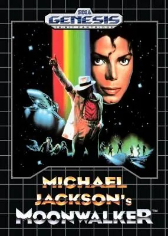
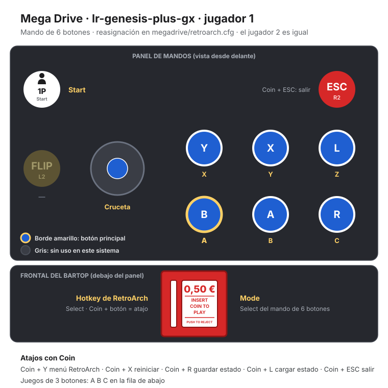
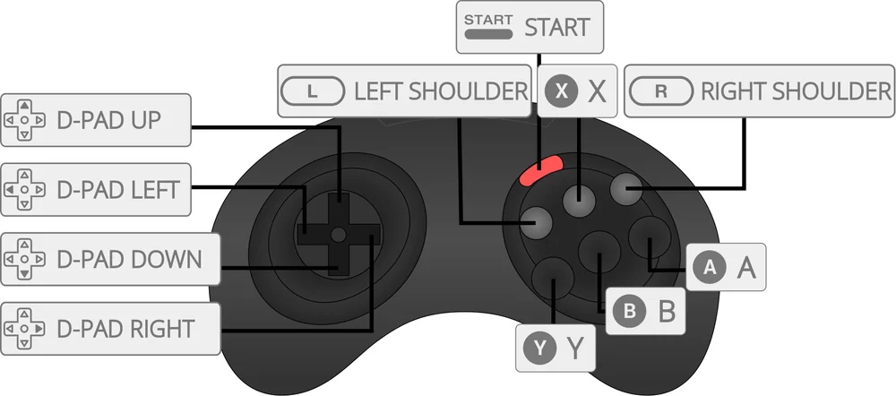

Mega Drive
Michael Jackson's Moonwalker
- Año: 1990
- Desarrollador: Ultimate Productions
- Género: Plataformas / Acción
- Jugadores: 2 jugadores
Michael Jackson's Moonwalker se basa en gran parte en la película de Michael Jackson. Mr. Big ha secuestrado a unos niños y les tiene preparadas cosas horribles, como drogarlos y convertirlos en esclavos. Michael debe usar sus poderes para salvar a sus pequeños amigos.
Michael Jackson puede saltar, lanzar estrellas mágicas y bailar para contrarrestar a sus rivales mientras busca a los niños escondidos. Las fases se inspiran en algunos de sus videoclips, como calles y cementerios.
Controles
Mando de Mega Drive: A B C abajo y, en los juegos de 6 botones, X Y Z arriba. Es el reparto general de la Mega Drive en esta máquina.
| Panel | Juego |
|---|---|
 | A |
 | B |
 | C |
 | X (solo juegos de 6 botones) |
 | Y (solo juegos de 6 botones) |
 | Z (solo juegos de 6 botones) |
 | Start |
 + +  | Salir del juego |
El panel en Mega Drive




Argumento
Recopilado de internet (2026-11-03). Lo marcado con ⚠️ no está probado en la bartop.
Sigue, a grandes rasgos, la parte Smooth Criminal de la película Moonwalker (1988). El malvado Mr. Big ha secuestrado a unos niños, y Michael Jackson usa sus poderes para rescatarlos. Las fases se inspiran en sus vídeos y en la película (calles y cementerios, entre otras), y la música son versiones de sus canciones (Bad, Thriller…).
Final: con todos los niños rescatados de cada fase, el chimpancé Bubbles se sube a hombros de Michael y le señala el camino hasta Mr. Big, que se burla de él y le manda oleadas de enemigos. ⚠️ Cómo es el final se ve en el vídeo de «Vídeos».
Fuentes
Wikipedia · descripción de la ficha (gamelist)
Jugabilidad
Recopilado de internet (2026-11-03). Lo marcado con ⚠️ no está probado en la bartop.
- Tipo de juego: plataformas y acción de Sega (1990), parecido a Shinobi. Para un jugador. Es distinto de la recreativa del mismo nombre. Cinco rondas de tres fases y la final (ver «Guía de niveles»).
- Rescatar niños: todos se parecen a Katie, la niña de la película, y están escondidos por la fase, a veces detrás de puertas. Casi todo lo demás está vacío o tiene enemigos.
- Ataque normal: la patada alta de sus coreografías, que en Mega Drive lanza chispas azules.
- Moonwalk: mantener el botón de ataque y moverse hacia atrás.
- Ataque especial: mantener su botón hace girar a Michael; al soltarlo lanza el sombrero, que destruye a los enemigos. Si se mantiene más, todos los enemigos de la pantalla se ponen a bailar con él y acaban dañados o vencidos. Cuesta vida: hasta la mitad de la barra cargado del todo.
- Vida: rescatar niños la recupera.
- Robot: rescatando a cierto niño y cogiendo un cometa que cae del cielo, Michael se convierte en robot.
- ⚠️ No he encontrado qué botón del mando hace cada cosa.
Fuentes
Guía de niveles
Recopilado de internet (2026-11-03). Lo marcado con ⚠️ no está probado en la bartop.
- Cinco rondas de tres fases y una sexta, la final, contra Mr. Big (según los capítulos del vídeo de «Vídeos»).
- Al rescatar al último niño de cada fase, Bubbles guía a Michael hasta el enfrentamiento final de la fase.
- Según la ficha, las fases se inspiran en sus vídeos, como calles y cementerios. ⚠️ No he encontrado los nombres de cada ronda.
Fuentes
Objetos
Recopilado de internet (2026-11-03). Lo marcado con ⚠️ no está probado en la bartop.
| Objeto | Qué hace |
|---|---|
| Niños | Hay que rescatarlos todos; recuperan vida |
| Cometa | Tras rescatar a cierto niño, convierte a Michael en robot |
| Bubbles | Aparece al rescatar al último niño y señala el camino |
Fuentes
Trucos y secretos
Recopilado de internet (2026-11-03). Lo marcado con ⚠️ no está probado en la bartop.
Secretos
- Michael robot: rescatar al niño indicado y coger el cometa que cae.
- Existe un prototipo de abril de 1990 con Thriller completa en el cementerio y otro jefe final; la versión de la bartop es la final (Rev A).
⚠️ No he encontrado trucos de botones fiables.
Fuentes
Longplay

Partida completa de la versión Mega Drive (47 min), de AL82 Retrogaming Longplays: Michael Jackson's Moonwalker Longplay (Sega Genesis) [QHD].
Pulsa el minuto de un nivel para ver el vídeo desde ese punto.